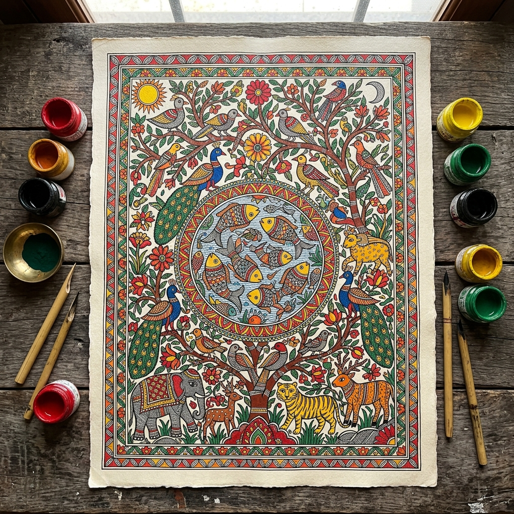
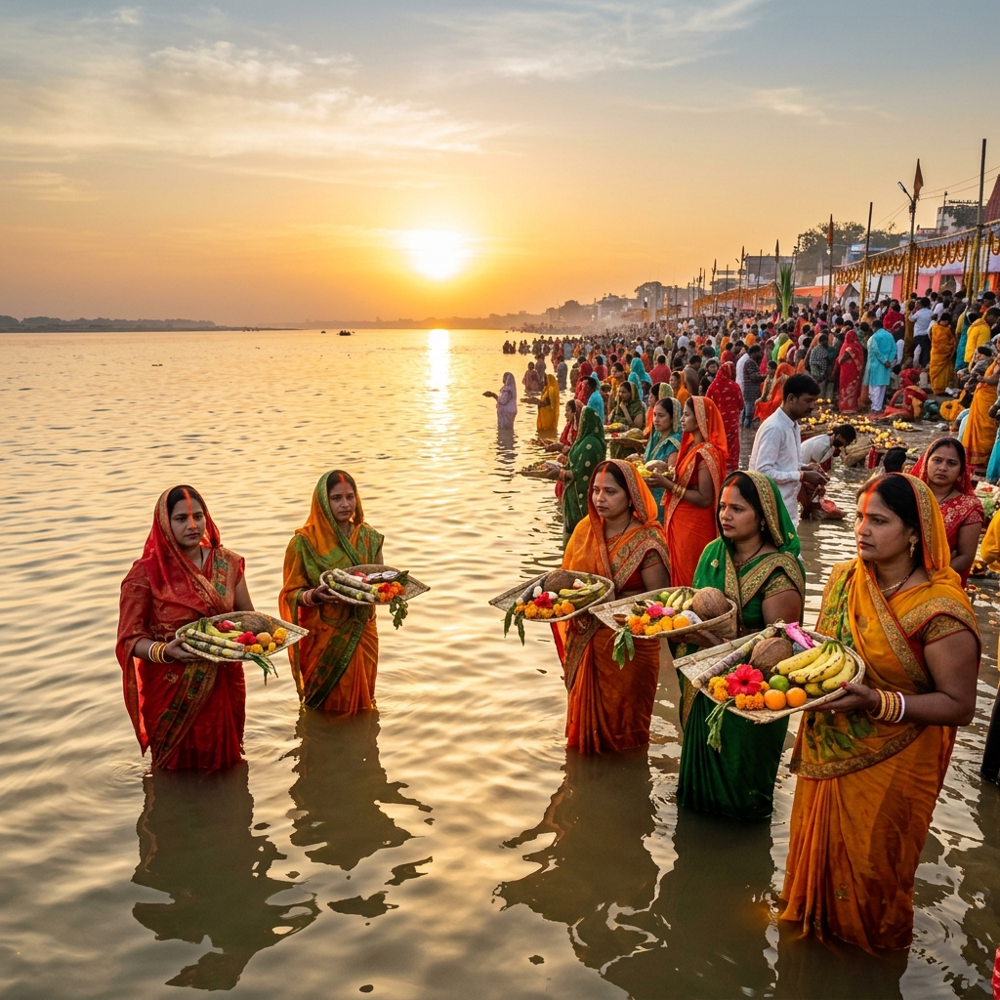

A Culture Older Than History Itself
Bihar does not merely preserve its traditions — it lives them daily. From the walls of Mithila homes painted at dawn to the river ghats lit for Chhath, this is culture as a breathing, moving force.

Madhubani — The Art of Mithila
Born in the villages of the Mithila region in northern Bihar, Madhubani painting (also called Mithila art) has been practised by women for generations as a way of honouring life's milestones — births, marriages, harvests, and festivals. The art was originally painted directly onto the walls and floors of homes using fingers, twigs, and brushes made from rice straw.
What makes Madhubani unmistakable is its visual language: bold outlines filled with geometric patterns, no empty spaces, and recurring symbols — fish for fertility, lotus for purity, the sun and moon for cosmic balance. The colours are vivid and natural, traditionally derived from turmeric, indigo, lampblack, and flowers.
Following devastating floods in the 1960s, UNICEF encouraged artists to paint on paper and canvas to supplement incomes. Today, Madhubani artworks are sold in galleries across India, Europe, and the Americas, and have even appeared on trains and airport walls as part of India's cultural promotion programmes.
- Originated in Mithila district, northern Bihar
- Painted by women across generations as ritual art
- Bold lines, geometric infills, nature motifs
- Recognised with a Geographical Indication (GI) tag
- Featured on Delhi Metro and Indian Railways trains
Festivals That Define Bihar
From the banks of the Ganga to village courtyards — Bihar's festivals are lived with extraordinary devotion and colour.

Chhath Puja — Worship of the Living Sun
Chhath is Bihar's most profound festival — and one of the few religious traditions in the world that requires no priest, no temple, and no intermediary between the devotee and the divine. For four consecutive days, millions of men and women fast without water, stand waist-deep in rivers at sunset and sunrise, and offer bamboo baskets filled with fruits, sugarcane, and thekua directly to Surya, the sun god. No festival in India draws its participants into such intimate, unmediated contact with a natural force.
Bihar Through the Year
Makar Sankranti
The kite-flying festival marks the sun's northward journey. Villages across Bihar fill the sky with paper kites while families share til-gur sweets.
Holi
Bihar's Holi celebrations are especially vibrant — communities drench each other in coloured water, and the traditional Phag songs ring through the streets.
Buddha Purnima
Bodh Gaya becomes the centre of the Buddhist world on this day, marking the birth, enlightenment, and passing of the Buddha on a single full moon night.
Teej
Women fast and pray for their husbands' long life, swinging on flower-decorated jhulas (swings) and singing monsoon songs called Kajri.
Chhath Puja
The grand solar festival — Bihar's most deeply observed ritual, spanning four days of fasting and worship of the sun god Surya.
Sonepur Mela
Asia's largest livestock fair, held on the banks of the Gandak river. Elephants, horses, camels, birds, and cattle are traded over several weeks of festivities.
Traditional Food of Bihar
Bihari food is humble, hearty, and deeply satisfying — rooted in agricultural life and prepared with minimal spice but maximum flavour.
Litti Chokha
Litti is wheat dough packed with spiced sattu and rolled into a ball that is placed directly in embers until charred and fragrant. Paired with chokha — a deeply smoky mash of fire-roasted brinjal, tomatoes, and mustard oil — it is the most honest expression of Bihar's agricultural soul. No plate in Indian cooking is more tied to a particular landscape.
Sattu — Bihar's Ancient Superfood
Long before nutritional science coined the word protein, Bihar's farming communities were sustaining themselves on sattu — roasted gram flour packed with slow-release energy. Stirred into cold water with black salt and raw mango, it becomes a summer drink that cools the body for hours. Pressed into paratha with onion and pickle, it becomes one of the most satisfying breakfasts on the subcontinent.
Dahi Chura
Poha soaked overnight in thick curd and sweetened with crumbled jaggery — Dahi Chura is Bihar's quiet morning ritual, eaten with calm deliberateness on the morning of Makar Sankranti and on countless ordinary days beside. The interplay of cold, tangy yoghurt and soft, yielding flattened rice is one of those combinations so simple it seems inevitable.
Thekua
Pressed in carved wooden moulds and fried in pure ghee, Thekua carries the geometry of Madhubani in edible form — each biscuit embossed with flowers, fish, and geometric borders. Made from whole wheat, jaggery, and fennel, it is dense, fragrant, and deeply ceremonial. Preparing it is a household act of devotion in the days before Chhath Puja.
Makhana Kheer
Fox nuts (makhana) simmered in rich reduced milk with sugar, cardamom, and dry fruits — a dessert of extraordinary elegance. Makhana is grown in the ponds of Darbhanga and Mithila, making it a uniquely Bihari ingredient celebrated for its health benefits.
Kadhi Badi
A tangy yoghurt-based curry made with gram flour dumplings (badi) and tempered with mustard seeds and dried red chilli. Served with plain rice, it is a staple of Bihari home cooking — simple enough for an everyday meal but comforting enough to feel like a celebration.
Clothing, Music & Dance
Bihar's cultural heritage is not only preserved in museums — it is worn, sung, and danced every day.
Dress & Textile Traditions
The Bhagalpuri silk saree — known as Tussar silk and woven from wild silkworm cocoons in Bhagalpur, Bihar's historic textile centre — has a natural warmth and lustre that no synthetic fabric replicates. Women wear the saree in the Bihari drape, pallu pulled forward with purpose. Men in rural Bihar still choose the dhoti-kurta as everyday wear, completing the outfit with a gamcha — a thin cotton wrap that serves simultaneously as towel, shade, and identifier of place.
Music of Bihar
Bihar's musical calendar moves with nature. Chaita songs herald the blazing arrival of spring; Kajri melodies slow into the monsoon's heavy rhythm; Sohar compositions greet new life. Beneath these seasonal folk forms runs the deep current of Dhrupad — among India's oldest classical vocal traditions — kept alive by the Darbhanga Gharana, whose masters shaped the sound of north Indian classical music for generations.
Folk Dance & Theatre
Jat Jatin is performed by couples on moonlit monsoon nights, enacting the timeless drama of a husband working far from home and a wife waiting at the threshold — a story every Bihari village knows in its bones. Bidesia, conceived by the visionary artist Bhikhari Thakur in the early 1900s, gave that same story a theatrical form of devastating honesty — mixing comedy, pathos, and social critique in performances that still draw village crowds across the Bhojpur belt.